Java es un lenguaje de programación creado por SUN Microsystems y que actualmente le pertenece a Oracle,
Java
se basa en lenguajes como C y C++, una de las principales características de Java es que es orientado a
objetos.
características del lenguaje:
Garbage Colector, se encarga de remover los objetos que no están en uso para liberarlos de la memoria
para hacer mas eficiente el lenguaje.
Orientado a objetos.
Multihilo.
Portable.
Multiplataforma.
Seguro: El código no está expuesto a nadie ya que a la hora de compilar el código lo convierte a
ByteCode(archivo .class) y a la hora de correr el programa no lee el código fuente.
Origen de Java
Java nació en 1991 su creador es James Gosling, Java fue adquirido por sun microsystems cuando James
Gosling creó el lenguaje.
¿Por qué se dio la necesidad de crear este lenguaje? Por la comunicación entre dispositivos, se
requería que los dispositivos tuvieran un software que podemos controlar, java surgió para satisfacer
la
necesidad de portabilidad de los dispositivos.
Java es un lenguaje que se originó para ser ampliamente portable.
En el año 2009 Oracle compró a Java, esto hizo que el sistema de certificaciones creciera.
Versiones de Java
Existen 3 versiones del lenguaje Java:
J2SE o simplemente Java SE: Java 2 Standard Edition o Java Standard Edition.
Orientado al
desarrollo
de aplicaciones cliente / servidor. No incluye soporte a tecnologías para internet. Es la base para
las
otras distribuciones Java.
J2EE: Java 2 Enterprise Edition. Orientado a empresas y a la integración entre
sistemas. Incluye
soporte a tecnologías para internet, se utiliza muchísimo en el backend de cualquier tipo de
aplicación.
Compilar es traducir el código escrito con algún lenguaje de programación a lenguaje máquina que es el
lenguaje que entienden los ordenadores (0 y 1).
La mayoría de los lenguajes se basan en el siguiente esquema:
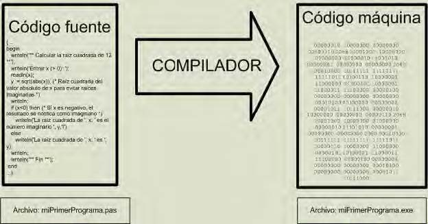
Primero se escribe el código fuente y luego se compila, el problema de esto es que si se compila en
Windows
se generará un ejecutable solo para Windows, si se compila en Mac un ejecutable para Mac,
es decir, que hay que crear varios ejecutables para los distintos sistemas operativos que hay en el
mercado,
en Java esto no es así ya que Java se hizo independiente de la plataforma
añadiendo un paso intermedio: los programas Java no se ejecutan en nuestra máquina real (en nuestro
ordenador o servidor) sino que Java simula una "máquina virtual" con su propio hardware y sistema
operativo. En resumen, el proceso se amplía en un paso: del código fuente, se pasa a un código intermedio
denominado habitualmente "bytecode" entendible por la máquina virtual Java. Y es esta
máquina virtual simulada, denominada Java Virtual Machine o JVM, la encargada de interpretar el
bytecode dando lugar a la ejecución del programa.
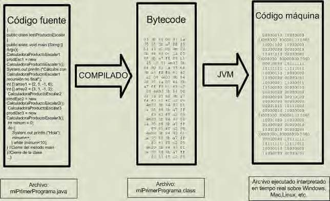
Esto permite que Java pueda ejecutarse en una máquina con el Sistema Operativo Unix, Windows, Linux
o cualquier otro, porque en realidad no va a ejecutarse en ninguno de los sistemas operativos, sino en
su propia máquina virtual que se instala cuando se instala Java. El precio para pagar o desventaja de
este
esquema es que todo ordenador que quiera correr una aplicación Java ha de tener instalado Java con su
máquina virtual. Las diferencias entre ambas concepciones podemos verlas en los siguientes esquemas.
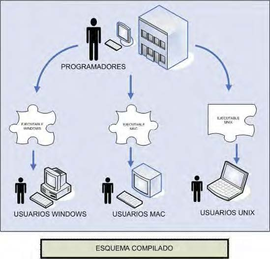
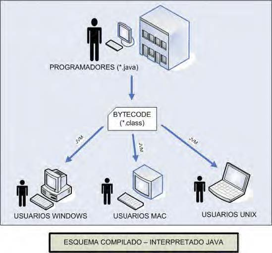
Aclarar que al ser Java un programa que se interpreta en una máquina virtual, el archivo resultante de
la compilación es un archivo con la extensión .class interpretable por la máquina virtual. Este archivo
.class está escrito en un lenguaje de máquina virtual (bytecode).
Para que la "Máquina Real" (nuestro ordenador) ejecute el programa, hay que "interpretar" (traducir)
el archivo .class a un código en "Lenguaje de Máquina Real". Esta es la labor de lo que llamamos
"intérprete" o traductor del lenguaje de la máquina virtual a la máquina real.
Los archivos respectivos que se encargan de estas tareas son:
• El compilador Java --- > javac.exe. Se encarga de compilar el código fuente.
• El intérprete Java --- > java.exe. Se encarga de interpretar los archivos .class (bytecode).
Más sobre JVM de Java
Es el punto de entrada para una aplicación Java. sin él, el programa no arrancaría, al
no estar escrito manda una excepción In Class NoMain: void main(String args[]) no está definido.
Todo lo que se deba o quiera mostrar en la consola, debe estar en el método main, todas las cosas que
queremos que vivan en nuestro programa debemos llamarlas en el método main
cuando el programa compila detecta al método main.
El método main en java es un estándar utilizado por la JVM para iniciar la ejecución de cualquier
programa Java. Dicho método se conoce como punto de entrada de la aplicación java, pero no en el caso de
contenedores gestionados por ambientes como Servlets, EJB o MIDlet ellos tienen métodos de ciclo de vida
propios.
Tipos de datos primitivos en Java
En Java existen ocho tipos de datos primitivos que se pueden clasificar en:
Números enteros (byte, short, int, long).
Números reales (float, double).
Carácter (char).
Booleano o lógico (boolean). De todos ellos, salvo del tipo boolean que únicamente puede ser true o
false.
A continuación se muestran sus posibles valores mínimo y máximo:
byte (8 bits) -128 127
short (16 bits) -32768 32767
int (32 bits) -2147483648 2147483647
long (64 bits) -9223372036854775808 9223372036854775807L -> L
Nota: un dato de tipo carácter se puede escribir entre comillas simples, por ejemplo 'a', o también
indicando su valor Unicode, por ejemplo '\u0061'.
Condicionales (if / else)
La sentencia if/else nos permite ejecutar un bloque de código o no, dependiendo de una condición que se
evalúa justo antes de este bloque.
Esta condición se evalúa a un valor booleano, es decir, su resultado solo puede tomar dos valores, true o
false.
Switch
Esta sentencia permite elegir múltiples caminos a seguir por el flujo de ejecución de nuestro programa.
En este caso, el camino a seguir se selecciona basándose en el valor de una expresión que se evalúa a un
valor entero.
Programación orientada a objetos (POO)
Es un enigma de la programación que se basa en modelar o interpretar por medio de elementos de
programación
objetos
de nuestra vida cotidiana, ya sean tangibles o intangibles, por ejemplo: tomar una calculadora (que es un
objeto en nuestro mundo :v ) y
llevarla a código, es decir, programar todas las funcionalidades que hace una calculadora.
POO es una nueva forma de pensar, se trata de descomponer un problema en subproblemas y más subproblemas,
una buena practica de utilizar este paradigma
es en ver el problema como un escenario del problema y tratar de simularlo con objetos.
Identificando objetos
Tienen atributos (características)
tamaño.
nombre.
forma.
representan el estado del objeto.
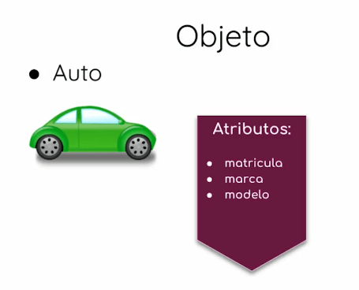
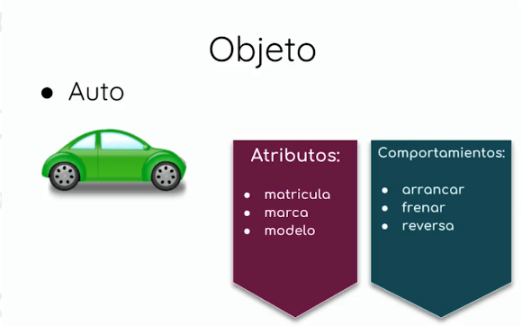
Los atributos y funciones de un objeto dependen del contexto en que se de.
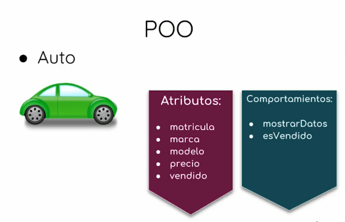
Declarando un objeto
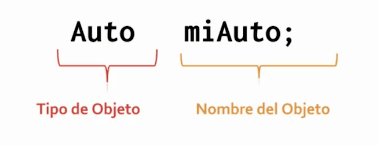
Instanciando un objeto
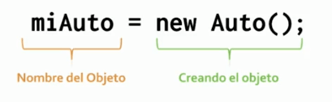
Métodos o Funciones
Los métodos no son más que bloques de código que cumplen una determina función, ejecutan algún proceso.
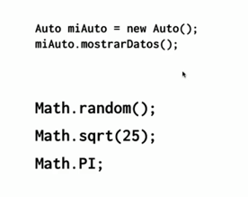
Estructura
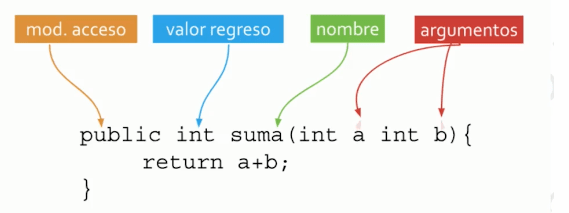
Constructor
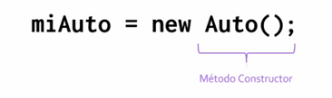
Diferente a los otros métodos.
Permite crear instancias u objetos de una clase.
Tiene el mismo nombre de la clase que inicializa.
Se usa la palabra new para invocarlo.
Se puede crear con o sin parametros.
No retorna ningún valor.
Métodos estáticos
Se pueden usar en toda la clase.
Estan definidos por la palabra reservada static.
Puede ser accesado indicando el nombre de la clase, la notación punto y el nombre del método.
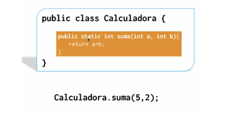
Puede ser invocado en una clase que no tiene instancia de la clase.
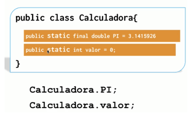
Sobrecarga de métodos
A veces necesitamos que dos o más métodos tengan el mismo nombre pero con diferentes argumentos o
parametros, a eso se le llama sobrecarga de métodos.
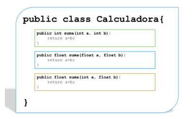
A sí como existe la sobrecarga de métodos tambien esta la sobrecarga de constructores, cuya finalidad es
crear o instanciar objetos de distintas maneras.
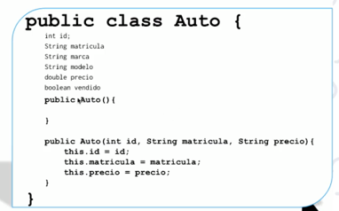
En la imagen anterior se puede ver una clase con un constructor vacío y un constructor que inicializa
atributos.
Modificadores de acceso
Los modificadores de acceso nos permiten guardar o proteger por así decirlo partes de nuestro código, nos
sirve para encapsular nuestro código.
¿Que es encapsular?
Es esconder datos para que nadie los pueda ver. se recomienda siempre encapsular las variables (que no
queremos que sean accesibles por el usuario) al empezar a crear las clases.
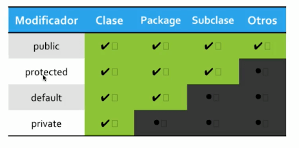
Getters y Setters
Leer/Escribir específicamente los valores de las variables miembro.
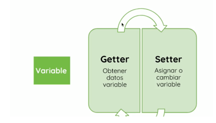
Cuando empieces a copiar y pegar código en Java, quiere decir siempre que hay una mejor forma de hacerlo,
utilizando las buenas prácticas.
Variables != Objetos
Objetos de variables primitivos.
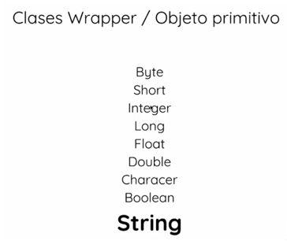
Una variable es un espacio de memoria al que le asignamos un contenido, puede ser un valor númerico, de tipo carácter o cadena de caracteres.
Las variables son diferentes a los objetos, las variables son entidades elementales (muy sensillas) como
por ejemplo: un número, un caractér o un valor
verdadero o falso.
En cambio un objeto son entidades complejas que pueden estar formadas por agrupación de muchas variables y
métodos.
Diferencia de como se almacenan en memoria
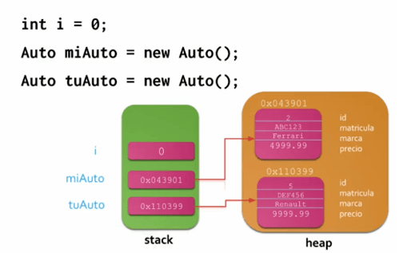
Variables primitivas con un tiempo de vida corto se almacenan en el stack.
Un objeto o instancia de una clase, que tiene un tiempo de vida mucho mas largo se almacena en el heap, y
en el stack solo se almacena el apuntador o dirección de memoria de donde esta almacenado el objeto.
Herencia
La programación orientada a objetos nos permite traducir el mundo que nos rodea a código. Esto incluye
objetos físicos de la vida real y también objetos conceptuales.
Ahora bien, la Herencia representa el tercer pilar de la programación orientada a objetos (POO de ahora en
adelante).
Los cuatro pilares de la POO son:
Abstracción (La capacidad de declarar clases).
Encapsulamiento (La capacidad de utilizar modificadores de acceso).
Reutilización (La capacidad de generar Herencia).
Polimorfismo (Es la capacidad de permitir mediante la herencia que dos objetos
distintos se comporten
como un objeto padre común, por ejemplo, en el uso de sobrecargas de métodos).
Entonces, la Herencia nos permite generalizar características y comportamientos en grupos más amplios. De
manera que podamos reutilizar en la mayor cantidad de características comunes.
Una estrategia para poder identificar la Herencia es por ejemplo analizando nuestras entidades para
detectar redundancia de dichas características.
Para programar orientado a objetos es necesario primero desarrollar capacidad de análisis orientado a
objetos. Para esto se lleva un paso más allá el principio de divide y vencerás de la metodología de
resolución de problemas de la programación estructurada; de manera que podemos analizar de la manera más
atómica los objetos que se encuentran involucrados en el sistema que queremos diseñar.
Lo más recomendable antes de empezar a programar es primero diseñar la arquitectura de nuestra aplicación
mediante diagramas. Para detectar la herencia podemos usar por ejemplo diagramas de clases de UML. Ver la
arquitectura de nuestras entidades nos va a permitir corregir errores de lógica antes de comenzar a
programar y entender cómo van a componerse y relacionarse mediante herencia nuestros tipos definidos por el
usuario (clases).
La herencia establece una relación padre-hijo entre dos objetos diferentes
La idea de la herencia es permitir la creación de nuevas clases basadas en clases existentes
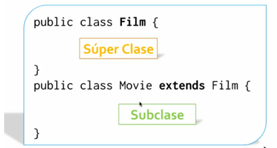
Super y This
super: indica que una variable o un método es de la clase padre (superclase).
this: Permite especificar que la variable esta señalando (this.nombreVariable) es de la
misma clase en la que se usa.
Herencia una subclase hereda todos los miembros de su súper clase que están declarados
como public o protected, todas las clases que se crean en java heredan de la clase object.
Al sobre escribir un método se coloca la notación @Override.
Sobreescritura Cuando una clase hereda de otra, y en esta clase hija se redefine un
método con una implementación distinta a la de la clase padre.
Métodos que tienen static o final no se pueden sobreescribir.
Polimorfismo
Posibilidad de construir varios métodos con el mismo nombre, pero con relación a la clase a la que
pertenece cada uno, con comportamientos diferentes.
Interfaces
Es un tipo de referencia similar a una clase que podría contener solo constantes, definiciones de métodos,
métodos con modificadores de acceso default.
Se establece la forma de una clase (nombre de métodos, listas de argumentos y tipos de retorno, pero no
bloques de código).
En las interfaces vemos el Polimorfismo, cuando se detecta que un método puede ser usado por clases que
heredan de distintos padres, se puede usar una interface.
Herencia: Se usa para reutilizar métodos y atributos de una sola familia.
Interface: Reutiliza métodos en diferentes familias.
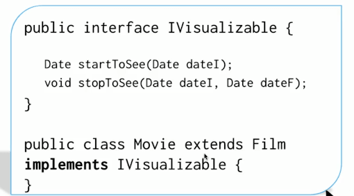
En una interface solo se coloca la cabecera del método, el resto del código se escribe en la clase donde
se implemente la interface.